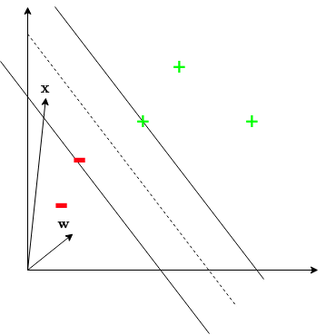
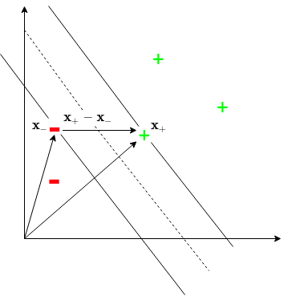

An Intuition for the Support Vector Machine
The support vector machine (SVM) is a widely-used machine learning algorithm. However, it has many components that
interact in complex ways. This article serves to collate these various components, develop an intuition about them,
and explain them in a rigorous and approachable way.
Introduction
Kernel methods are very useful pattern recognition algorithms, and still
see wide use in practise. The most popular kernel method is known as the
support vector machine (SVM) .
The goal of an SVM, as with all classification algorithms, is to find a mapping \(f : \mathcal{X} \rightarrow
\mathcal{Y}\) using a training dataset \(S \subset \mathcal{X} \times \mathcal{Y}\), where \(S = X \times Y\) for
some \(X \subset \mathcal{X}\) and \(Y \subset \mathcal{Y}\). In this work, we will focus on a binary classification
context: \(\mathcal{Y} = \{+1, -1\}\), and a simple 2D real vector space as our feature space: \(\mathcal{X} =
\mathbb{R}^2\).
The estimation of \(f\) using the SVM optimisation algorithm can be done in various ways. We will cover the
following concepts of the SVM framework: soft-margin, hard-margin, and the kernel trick. All of them, however, have
the same overarching goal - compute an optimal separating hyperplane. Optimality of the hyperplane in the context of
an SVM is that the hyperplane is defined to be the maximum-margin separating hyperplane. This makes intuitive
sense, since a decision boundary that is far away from the classes as possible seems as if it would perform best in
terms of generalisation performance.
The goal of the work is to develop an intuition about the various components of the SVM, when to use the various
flavours, and why they do or do not work.
A Geometric Derivation

The goal of an SVM is to construct a maximum-margin separating hyperplane
between the classes. To do this, consider a vector \(w\) that a perpendicular
to the margin, and a novel point \(x\), which is the data point we want to
classify. First, we project \(x\) onto \(w\): \(w \cdot x\). Since \(w\) is
normal to the hyperplane, this projection is also normal to it. Thus, we can
classify \(x\) as a positive example if it is far enough away from the
hyperplane, which we can formalise with the following decision rule:
$$w \cdot x \ge c$$
for some \(c \in \mathbb{R}\). We rewrite this decision rule as the following
for convenience:
$$w \cdot x + b \ge 0$$
with \(b = -c\).
It is important to note that the above decision rule is not stringent enough. In
this current formulation, any separating hyperplane will satisfy the
condition. Thus, we need to introduce additional constraint into the problem in
order to find the maximum-margin hyperplane (not just any hyperplane). To do this,
we introduce the following constraints. For positive examples \(x_+\):
$$w \cdot x_+ + b \ge 1$$
and for negative examples \(x_-\):
$$w \cdot x_- + b \le -1$$
We can condense these 2 constraints into a single constraint using the targets
associated with the input samples, since they are encoded as either \(+1\) or
\(-1\). This is the reason the binary targets for an SVM are encoded as
\(\{+1, -1\}\), instead of \(\{0, 1\}\) or some other encoding.. The single
constraint, which holds for both positive and negative examples, is defined as:
$$y_i (w \cdot x_i + b) \ge 1$$.

Since the SVM learns a maximum-margin, we must find an expression for the width
of the margin. From the figure, we see that the width can be computed using the
following:
$$(x_+ - x_-) \cdot \frac{w}{||w||}$$
It should be noted that \(x_+\) and \(x_-\) in the above expression are support
vectors. Support vectors are those vectors which lie exactly on the margin
(i.e. \(y_i (w \cdot x + b) - 1 = 0\)). These vectors fully define the hyperplane.
We will denote the set of support vectors for a given SVM as \(P\). Using this
definition of support vectors, simple algebra yields the following expression for
the margin width:
$$\frac{2}{||w||}$$
Since we want to maximise the margin, we need to solve the following optimisation
problem:
$$\max_{w, b} \frac{2}{||w||}$$
subject to
$$y_i (w \cdot x_i + b) \ge 1$$
This is mathematically equivalent to the following:
$$\min_{w, b} \frac{1}{2} ||w||^2$$
subject to
$$y_i (w \cdot x_i + b) \ge 1$$
This optimisation problem is the perfect candidate for Langrange multipliers, and is
is known as the primal formulation of the SVM. It is a classic quadratic programming
problem. The classification rule for the primal is \(f(x) = \text{sign}(w \cdot x + b)\).
We formulate the Lagrangian:
$$\mathcal{L}(w, b) = \frac{1}{2} ||w||^2 - \sum_i \alpha_i [y_i (w \cdot x_i + b) - 1]$$
Taking the derivative with respect to the hyperplane slope \(w\), we yield:
$$\frac{\partial \mathcal{L}}{\partial w} = w - \sum_i \alpha_i y_i x_i = 0$$
Solving for \(w\) yields: \(w = \sum_i \alpha_i y_i x_i\). The equivalent equation
for the intercept parameter \(b\) is: \(\sum_i \alpha_i y_i = 0\).
We can stop here and solve for the two parameters. However, it is useful to convert the
above primal formulation into its dual counterpart. This is because sometimes
it is more efficient to solve the one than the other. Formally, we are solving for
\(d\) parameters in the primal, and for \(N\) in the dual. Thus, typically if
\(N << d\), it is generally more efficient to solve the dual than the primal.
To construct the dual, we plug the equations obtained by taking the partial
derivatives with respect to \(w\) and \(b\) back into the Lagrangian. The yields
(after some algebra) the following:
$$\mathcal{L}(\alpha_i) = \sum_i \alpha_i - \frac{1}{2} \sum_i \sum_j \alpha_i \alpha_j y_i y_j x_i \cdot x_j$$
subject to
$$\alpha_i \ge 0, \sum_i \alpha_i y_i = 0$$
This dual formulation has the following classification rule:
\(f(x) = \sum_i \alpha_i y_i x_i \cdot x + b\). The equivalent condition within the
dual formulation for support vectors is \(\alpha_i \neq 0\). Fortunately, for most
problems we only have few support vectors (i.e. \(\alpha_i = 0\) for most samples
in the dataset). An important note on support vectors is that, generally, the smaller
the ratio \(\frac{|P|}{|S|}\), the better the generalisation performance. In other words,
the fewer support vectors with respect to the number of samples in the training set,
the better. This makes intuitive sense, since if the SVM can construct a hyperplane
with few samples, it is confident about the class labels about the majority of the
training examples.
The above formulations of both the primal and dual are known as the hard-margin
SVM. This is important since the assumption being made is that the classes are
can be separated perfectly using a hyperplane. This strong assumption of perfect
separation often does not hold in practise, and there are ways of to accommodate
for this. These will be discussed in the next section.
The Soft Margin
The soft-margin SVM is a natural extension of the soft-margin
variant. The main disadvantage of the hard-margin SVM is its strong
assumption of perfect separation of the classes being possible. This is
often not the case in practise. As such, soft-margin SVMs introduce so-called
slack variables to accommodate for this. The slack variables essentially
allow the SVM some leeway in its where the data points must be relative to the
margin. Formally, the primal formulation of the soft-margin variant of the SVM
is given by:
$$\min_{w, b, \xi_i} \frac{1}{2} ||w||^2 + C \sum_i \xi_i$$
subject to
$$y_i (w \cdot x_i + b) \ge 1 - \xi_i$$
where \(\xi_i\) are the slack variables, and \(C \in \mathbb{R}\). It is clear
from the constraint how the leeway is introduced into the optimisation problem.
The constraint is less stringent by allowing for a slack of \(\xi_i\) units for
where point \(x_i\) lies with respect to the hyperplane.
The dual equivalent within the soft-margin setting is given by:
$$\min_{\alpha_i} \frac{1}{2} \sum_i \sum_j \alpha_i \alpha_j y_i y_j x_i \cdot x_j - \sum_i \alpha_i$$
subject to
$$0 \le \alpha_i \le C, \sum_i \alpha_i y_i = 0$$
Clearly, we can introduce the leeway within the primal without having to solve for
the additional parameters in the form of the slack variables \(\xi_i\).
Now that we have found a way to find a hyperplane, even when the classes
are not perfectly separable, it seems we are done. However, this is still
not sufficient for the SVM to be able to model a variety of real-world
problems. The main disadvantage with the soft-margin formulation as
derived above is that it still assumes the data is linearly separable.
This is why this formulation is known as the linear SVM.
It assumes a hyperplane (with some misclassification leeway) is sufficient to
separate the classes adequately. This assumption often does not hold, as
most real-world data is non-linear. A technique, known as the
kernel trick is a way of allowing the SVM is model linearly
non-separable data, with minimal changes to the optimisation problem.
The Kernel Trick
A kernel function is a function \(k : \mathcal{X} \times \mathcal{X} \rightarrow \mathbb{R}\).
These are two main conditions for \(k\) to be a valid kernel for the SVM. Firstly,
it should be a Mercer kernel. Interestingly, if \(k\) is not a Mercer kernel, the SVM
optimisation problem is no longer convex. Secondly, the kernel should be able to be
written as a feature map \(\phi : \mathcal{X} \rightarrow \mathcal{V}\) such that:
$$k(x_i, x_j) = \langle \phi(x_i), \phi(x_i) \rangle$$
Now, recall the (without loss of generality) the objective function for the
dual formulation for a soft-margin linear SVM:
$$\frac{1}{2} \alpha_i \alpha_i y_i y_j x_i \cdot x_j - \sum_i \alpha_i$$
Note that the first term of this objective function - and thus the whole optimisation
problem for the SVM, depends only on dot products between the input vectors.
This is where the kernel trick comes into play. We can replace these dot products with
the corresponding kernel values using \(k(x_i, x_j)\), since the kernel is defined
(from above) to return exactly the dot product of a transformed version of the input
vectors. The key is that this transformation is necessarily non-linear. This is what
equips the SVM with the ability to model non-linear data. The make the following
small change to the objective function:
$$\frac{1}{2} \alpha_i \alpha_i y_i y_j k(x_i, x_j) - \sum_i \alpha_i$$
and the decision rule changes similarly to: \(f(x) = \sum_i \alpha_i y_i k(x_i, x)\).
This means that the solution to the dual now depends on \(k(x_i, x_j)\) for all
\(i, j\). This is known as the Gram (or kernel) matrix. However, this introduce a
bottleneck. If \(n := |S|\) is too large, then it becomes infeasible to compute an
\(n \times n\) Gram matrix. In such situations, it becomes more efficient to solve
the primal.
Experiments

In the above image, we see that see that the 2 classes are well-separated, and are thus linearly separable.
Therefore, a hard-margin SVM can be easily learned for this dataset. Additionally, only 2 support vectors are needed
to define the decision boundary (depicted with yellow boundaries).

When the data are linearly nonseparable, a hard-margin linear SVM cannot find a hyperplane. This results in a poor
decision boundary, as depicted above. Further, in its attempt to find the hyperplane when the data is linearly
nonseparable, all points become support vectors: \(P = X\). This is a good indicator that something has gone wrong
during the optimisation of an SVM.
http://www.robots.ox.ac.uk/~az/lectures/ml/lect3.pdf
https://cel.archives-ouvertes.fr/cel-01003007/file/Lecture3_Linear_SVM_with_Slack.pdf